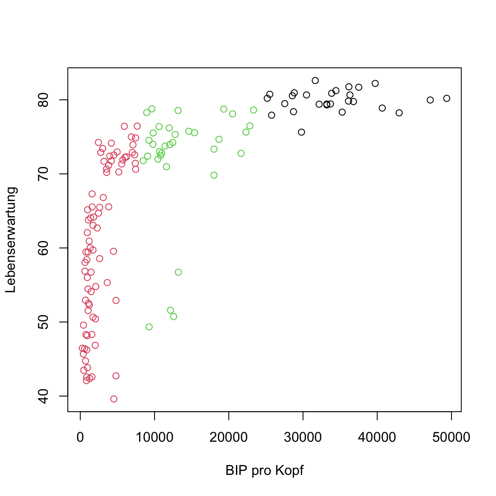
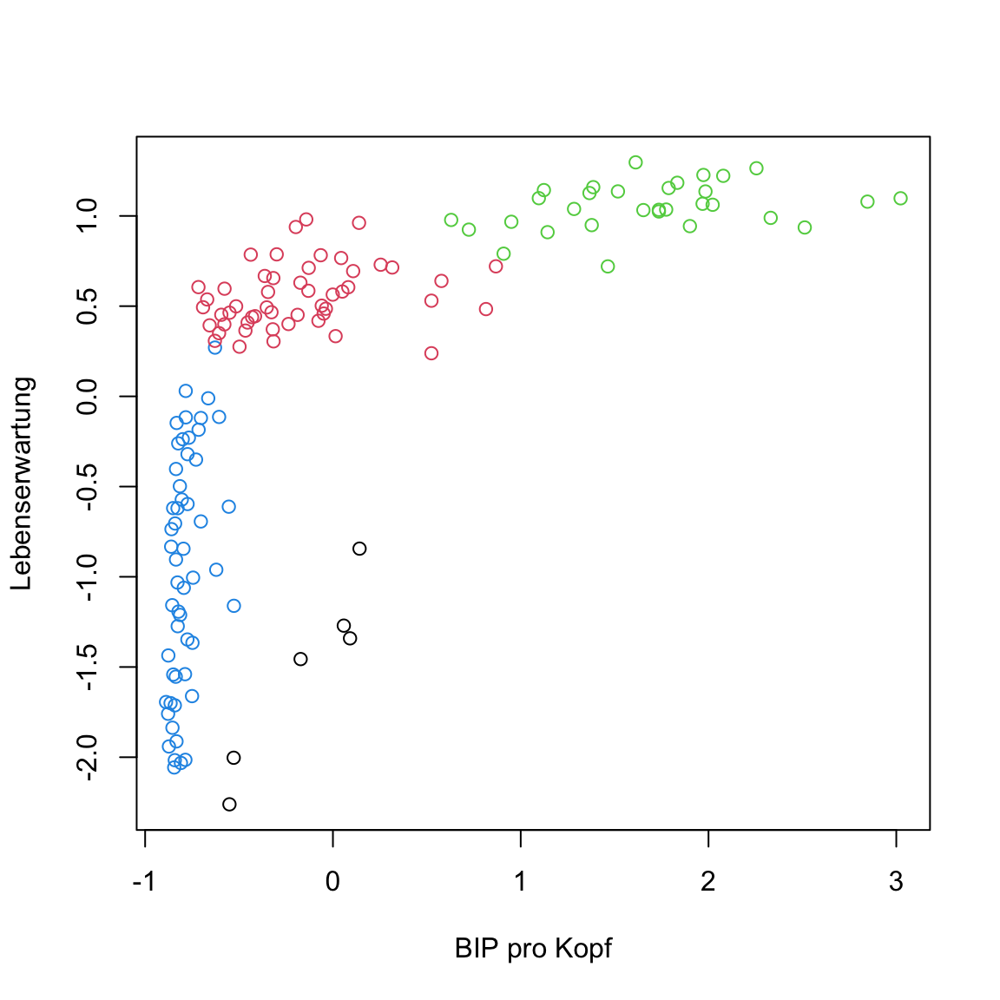
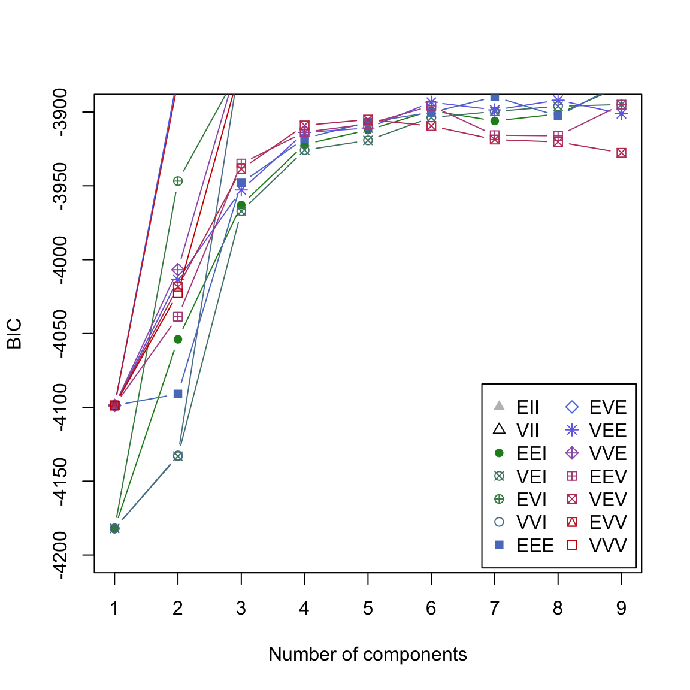

Unsupervised learning
|
Machine learning with R The R Bootcamp |

|
from gapminder.org
Overview
In this practical, you will learn how to apply cluster analysis to two data sets.
In the end, you will know how to:
- How to identify clusterings using different algorithms.
- How to estimate the number of clusters for a given problem.
Tasks
A - Setup
Open your
TheRBootcampR project.Open a new R script. Write your name, the date and “Unsupervised learning Practical” as comments at the top.
## NAME
## DATUM
## Unsupervised learning practicalSave the script as
Unsupervised_practical.Rin the2_Codefolder.Load the packages
tidyverse,cstab,dbscan, andmclust.
B - Load the gap data set
- Using
read_csv(), read ingap.csvand save it asgap.
# Read gap.csv
gap <- read_csv('1_Data/gap.csv')Print the data set and inspect its contents.
Use
summary()to get additional insight into the data.Use the code below to create a new data set containing only the data from year 2007 and features
LebenserwartungandBIP pro Kopf.
# gap in 2007
gap2007 <- gap %>%
filter(Jahr == 2007) %>%
select(`BIP pro Kopf`, Lebenserwartung)C - k-means
- Using
kmeans(), identify three clusters (centers) ingap2007.
# kmeans of gap in 2007
gap2007_km <- kmeans(x = XX, centers = XX) # kmeans of gap in 2007
gap2007_km <- kmeans(x = gap2007, centers = 3) - Print
gap2007_kmand study the output.
# kmeans of gap in 2007
gap2007_kmK-means clustering with 3 clusters of sizes 27, 80, 34
Cluster means:
BIP pro Kopf Lebenserwartung
1 34099 79.9
2 2809 60.3
3 13701 72.1
Clustering vector:
[1] 2 2 2 2 3 1 1 1 2 1 2 2 2 3 3 3 2 2 2 2 1 2 2 3 2 2 2 2 2 3 2 3 3 3 1 2 2
[38] 2 2 2 3 2 2 1 1 3 2 1 2 1 2 2 2 2 2 1 3 1 2 2 3 2 1 1 1 2 1 2 2 2 3 3 2 2
[75] 3 2 2 3 2 2 3 3 2 3 2 2 2 2 2 1 1 2 2 2 1 3 2 3 2 2 2 3 3 3 2 3 2 2 3 2 3
[112] 2 1 3 1 2 3 1 2 2 2 1 1 2 1 2 2 2 3 2 3 2 1 1 3 3 2 2 2 2 2
Within cluster sum of squares by cluster:
[1] 9.86e+08 3.76e+08 6.82e+08
(between_SS / total_SS = 90.7 %)
Available components:
[1] "cluster" "centers" "totss" "withinss" "tot.withinss"
[6] "betweenss" "size" "iter" "ifault" The first row of the output and the table
Cluster meansshows how many objects were assigned to each of the three clusters and where the centroids (cluster means) of these are located.At the bottom of the output is a list of names of objects contained in the clustering object. Use
gap2007_km$XXto select the objectclusters, as well as the elementscentersand store them asclustersandcentersrespectively.
# gap2007_km
clusters <- gap2007_km$XX
centers <- gap2007_km$XX# gap2007_km
clusters <- gap2007_km$cluster
centers <- gap2007_km$centers- Use the code below to plot the data and cluster assignments.
# kmeans of gap in 2007
plot(gap2007, col = clusters)
- Now use the code below to add the centroids.
# kmeans of gap in 2007
plot(gap2007, col = clusters)
points(centers, pch = 16, col = 1:3, cex = 2)
Something’s off, right? Some points of the middle cluster actually seem to lie closer to the bottom-left cluster. This shouldn’t be the case. Any ideas how this has come about?
The problem is that the features have different scales. The values of
BIP pro Kopfare way larger than those inLebenserwartungand, thus, a lot further away from each other. For that reason,BIP pro Kopfplays a much larger role for cluster assignments thanLebenserwartung. To fix this problem, run the code below, which scaled the features ingap2007.
# scale gap in 2007
gap2007_scaled <- gap2007 %>%
scale() %>%
as_tibble()- Now, run
kmeans()forgap2007_scaledand plot the data and cluster assignments. All good now?
# kmeans plot for gap in 2007
gap2007_scaled_km <- kmeans(x = gap2007_scaled, centers = 3)
# extract elements
clusters <- gap2007_scaled_km$cluster
centers <- gap2007_scaled_km$centers
# plot
plot(gap2007_scaled, col = clusters)
points(centers, pch = 16, col = 1:3, cex = 2)
D - k-selection
- It’s time to estimate how many clusters there might be in the data. Use the code below to create a vector of within-cluster variances for
kmeanssolutions associated with 2 to 20 clusters. The code uses thegap2007_scaleddata.
# within-cluster variance development
km_development <- purrr::map(2:20, kmeans, x = gap2007_scaled)
withinvar <- purrr::map_dbl(km_development,
`[[`, i = 'tot.withinss')- Using
plot()create a plot of the development of thewithinvar.
# kmeans within-variance development
plot(withinvar)What does the plot tell you? Is there an elbow that would suggest a particular value of k?
Several values of k seem plausible: 1, 3, or 7. Use
cDistance()from thecstabpackage to estimate k with values from 2 to 20 (2:20) as candidates.
# estimate k with cstab
k_est <- cDistance(data = as.matrix(XX),
kseq = XX:XX)# estimate k with cstab
k_est <- cDistance(data = as.matrix(gap2007_scaled),
kseq = 2:20)- Extract
k_est$k_Gapundk_est$k_Slope. Do the numbers seem reasonable?
# estimate k with cstab
k_est$k_Gap[1] 14k_est$k_Slope[1] 3- Now try
cStability()and extractk_instab. Reasonable?
# estimate k with cstab
k_est <- cStability(data = as.matrix(gap2007_scaled),
kseq = 2:20)
========
================
========================
================================
========================================
================================================
========================================================
================================================================
========================================================================
================================================================================k_est$k_instab[1] 3Remember: There is no true k.
E - DBSCAN
- Use
dbscan()from thedbscanpackage to cluster the data. Again it is essential to work withgap2007_scaledas otherwiseepswould describe an ellipse and not a circle. Setepsto.5.
# cluster using DBSCAN
gap2007_scaled_dbscan <- dbscan(x = XX,
eps = XX)# cluster using DBSCAN
gap2007_scaled_dbscan <- dbscan(x = gap2007_scaled,
eps = .5)Print
gap2007_scaled_dbscan. What does the outpute tell you? Remember 0 means outlier.A single cluster and 5 outliers were identified. Visualize the solution using the same approach as above. The
+ 1is necessary as 0 implies no color.
# extract clusters
clusters <- gap2007_scaled_dbscan$XX
# plot
plot(XX, col = XX + 1)# extract clusters
clusters <- gap2007_scaled_dbscan$cluster
# plot
plot(gap2007_scaled, col = clusters + 1)- Now run
dbscan()again using different values foreps. Tryeps = .3andeps = .1. Both times plot the results the same way as before. Any changes? Any of the solutions reasonable?
# cluster using DBSCAN
gap2007_scaled_dbscan.3 <- dbscan(x = gap2007_scaled, eps = .3)
gap2007_scaled_dbscan.1 <- dbscan(x = gap2007_scaled, eps = .1)
# plot
par(mfrow = c(1, 3))
plot(gap2007_scaled, col = gap2007_scaled_dbscan$cluster + 1)
plot(gap2007_scaled, col = gap2007_scaled_dbscan.3$cluster + 1)
plot(gap2007_scaled, col = gap2007_scaled_dbscan.1$cluster + 1)dbscan()has additional parameters.minPtsdetermines the number of points withinepsnecessary for a point to be a core point. If you like, try different values to explore the effect ofminPts.
F - Gaussian Mixtures
- Finally, use
Mclustfrom themclustpackage to cluster the date using Gaussian mixtures. This time, you can work with the original data setgap2007as Gaussian mixtures are able to account for the differences in scale.
# Gaussian mixtures
gap2007_gm <- Mclust(XX)# Gaussian mixtures
gap2007_gm <- Mclust(gap2007)Print the object
gap2007_gm. What do you see?The output of
gap2007_gmreveals very little. It only shows which objects it contains. Usetable(gap2007_gm$classification)to gain an overview over the cluster assignments. How many clusters were identified and how many does each contain?Use the
classificationelement to create a visualization of the cluster assignments.
# plot
plot(gap2007_scaled, col = gap2007_gm$classification)
- Now use `
plot(gap2007_gm, what = 'classification')to createmclust’s own visualization.
# plot using mclust
plot(gap2007_gm, what = 'classification')
Try to understand what the ellipses in the
mclustplot reveal about the clusters. Remember they represent normal distributions with variances and co-variances reflecting the correlations between the features.One desirable property of Gaussian mixtures is that they produce estimates of the uncertainty associated with assigning a data point to a particular cluster. Use
plot(gap2007_gm, what = 'uncertainty')to visualize this. The size of the points reflects the degree of uncertainty associated with a point being assigned to one particular cluster and not the others.
# plot
plot(gap2007_gm, what = 'uncertainty')
X - Challenges: Modellselection
- A further useful property of Gaussian mixtures is the existence of different implementations with different complexity. In fact,
Mclust()already considers a variety of implementations in addition to different values of k. You can gain an overview on the performance of these usingplot(gap2007_gm, what = 'BIC').
# plot
plot(gap2007_gm, what = 'BIC')BIC is the Bayesian Information Criterion and it characterizes the model fit in relation to model complexity. In this case, higher BIC values indicate better performance. In the visualization you see the performance of 14 different implementations as a function of different values k (x-axis).
- Use
plot(gap2007_gm, what = 'BIC', ylim = c(-4200, -3900))to get a better view on the critical region of the plot. Now you should be able to see thatEVVfork=4shows the best performance overall.
# plot
plot(gap2007_gm, what = 'BIC', ylim = c(-4200, -3900))
- Use
?mclustModelNamesto see descriptions for each of the model. This reveals thatEEVonly makes the simplifying assumption of equal volume between the different ellipsoids. This is also what you see inplot(gap2007_gm, what = 'classification').
plot(gap2007_gm, what = 'classification')- Now explore using the code below what happens if you tell the model to use a specific implementation of Gaussian mixtures. Replace the ‘XX’ in
modelNames = 'XX'with one of the three letter codes denoting the different models. Then visualize the result. Begin with'EEI'.
# Try different implementation
gap2007_gm <- Mclust(gap2007, modelNames = 'XX')
plot(gap2007_gm, what = 'classification')# Try different implementation
gap2007_gm <- Mclust(gap2007, modelNames = 'EEI')
plot(gap2007_gm, what = 'classification')
Y - Challenges: New data set
- Use
read_csv()to read incredit.csvas objectcredit.
# Read credit.csv
credit <- read_csv('1_Data/credit.csv')Print the data set and familiarize yourself with its contents.
Use one or more of the clustering methods used above to identify clusters among credit card users. Have fun!
Examples
library(tidyverse)
library(cstab)
library(dbscan)
library(mclust, mask.ok = F)
# Example data
data(mpg)
# Process data
mpg <- mpg %>% select_if(is.numeric)
mpg_stand <- mpg %>%
scale %>% # standardize/scale data
as_tibble()
# k-means -----
# Identify clusters
mpg_km <- kmeans(mpg_stand,
centers = 3)
# Show centroids
mpg_km$centers
# k-selection -----
# Sow within-variance
km_development <- purrr::map(2:20, kmeans, x = mpg_stand)
withinvar <- purrr::map_dbl(km_development,
`[[`, i = 'tot.withinss')
# Visualize withinvar
plot(withinvar)
# Gap & Slope statistics
k_est <- cDistance(as.matrix(mpg_stand),
kseq = 2:20)
k_est$k__Gap
k_est$k_Slope
# Cluster stability
k_est <- cStability(as.matrix(mpg_stand),
kseq = 2:20)
k_est$k_instab
# DBSCAN -----
# Identify clusters
mpg_dbscan <- dbscan(mpg_stand, eps = 1)
# Show centroids
mpg %>%
mutate(cl = mpg_dbscan$cluster) %>%
group_by(cl) %>%
summarize_all(mean)
# Gaussian Mixtures -----
# Identify clusters
mpg_gm <- Mclust(mpg)
# Show centroids
mpg %>%
mutate(cl = mpg_gm$classification) %>%
group_by(cl) %>%
summarize_all(mean)
# Visualize clusters
plot(mpg_gm, what = 'classification')
# Compare clusters -----
table(mpg_km$cluster, mpg_dbscan$cluster)
table(mpg_km$cluster, mpg_gm$classification)
table(mpg_dbscan$cluster, mpg_gm$classification)Data sets
| File | Rows | Columns |
|---|---|---|
| gap.csv | 1692 | 6 |
| credit.csv | 8636 | 8 |
gap.csv
The gap data set is based on the Gapminder project and has been extracted from the R package gapminder.
| Feature | Description |
|---|---|
| Land | Name of country |
| Kontinent | Name of continent |
| Jahr | year |
| Lebenserwartung | life expectancy in years |
| Population | Anzahl Population of country |
| BIP pro Kopf | GDP per capita |
credit.csv
The credit data set is an excerpt of the publicly available Credit Card Dataset. The data set contains 8 features, that describe the behavior of 8636 credit card custmers.
| Variable | Beschreibung |
|---|---|
| BALANCE | Available credit |
| BALANCE_FREQUENCY | Frequency of balance changes of (1 = frequent, 0 = infrequent) |
| PURCHASES | Sum of purchases |
| CREDITLIMIT | Limit of credit card |
| ONEOFFPURCHASES | Value of largest one-off purchase |
| MINIMUM_PAYMENTS | Minimal credit card payment |
| PRCFULLPAYMENT | Percent in-full credit card payments |
| TENURE | Duration of credit card account |
Functions
Package
| Paket | Installation |
|---|---|
tidyverse |
install.packages("tidyverse") |
cstab |
install.packages("cstab") |
dbscan |
install.packages("dbscan") |
mclust |
install.packages("mclust") |
Functions
Clustering
| Function | Package | Description |
|---|---|---|
kmeans() |
stats |
Cluster data with k-means |
dbscan() |
dbscan |
Cluster data with DBSCAN |
Mclust() |
mclust |
Cluster data with Gaussian mixtures |
k-selection
| Function | Package | Description |
|---|---|---|
cDistance() |
cstab |
Identify k with distance-based methods, e.g., gap statistic. |
cStability() |
cstab |
Identify k with instability-based methods. |
Resources
Documentation
- A good Tutorial on k-means and hierarchical clustering.